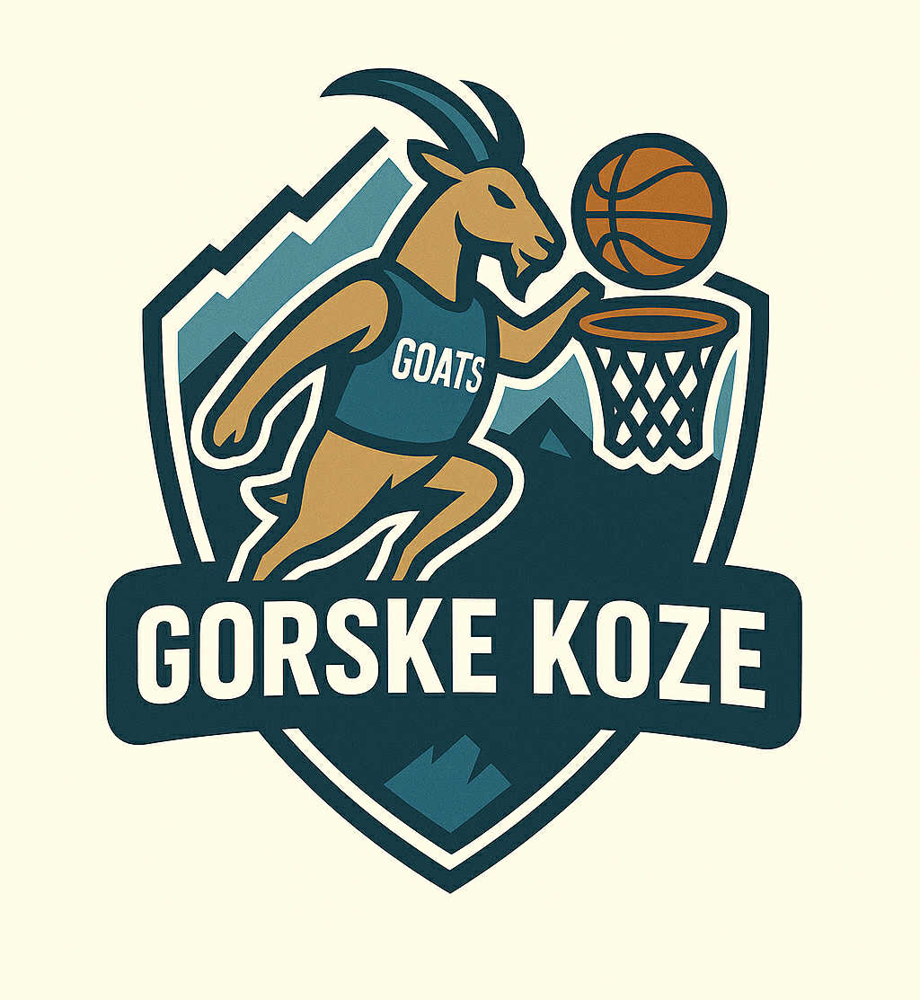

EKIPE
Vid Urnaut Gorske Koze

Team owner: Vid Urnaut
Joined league: 2017 (season 1)
History: Team Urnaut (seasons 1-4),
Barnes not-so-much MVP (season 5)
Arena: Aljažev Stolp
Capacity: 10
Location: Triglav, Slovenija
Average ranking: 7.57 (8th)
| Sezona | Uvrstitev |
|---|---|
| 2017/18 | 9 |
| 2018/19 | 6 |
| 2019/20 | 10 |
| 2020/21 | 11 |
| 2021/22 | 4 |
| 2022/23 | 7 |
| 2023/24 | 6 |
| 2024/25 | ... |
| AVERAGE | 7.57 |
Intervju - VID URNAUT (september, 2022)
Po dnevu premora, polnem zanimivih statističnih podatkov je ponovno čas za intervju. Tokrat se nam je pridružil Urnaut, eden izmed najbolj univerzalno priljubljenih managerjev te lige.
1) Vsi vemo, da je vaš najljubši igralec Harrison Barnes iz sezone 2021/22. Ste za letos že našli kar se le da dober približek temu, boste morda znova poskusili z njim?
Na to vprasanje težko podam odgovor, ker sem vsako leto tudi sam presenecen da nekdo iz moje ekipe igra tako dobro. Siguren sem da to nebo vec Barnes saj sem z njim že sezono kasneje izgubil kar nekaj las, mnogo vec kot pa z njim pridobil tock.
2) Vsako sezono imate obdobje ko ste strah in trepet tekmecev, dolgoročno pa odmevnih rezultatov ni.. Kako boste letos pristopili k pohodu na vrh lestvice?
Tudi slepa kura zrno najde bi rekel, tako da mislim da je letos cas da se na vrh povzpe koncno nekdo z obilico znanja in ne samo z veliko srece. Napadali bomo od zacetka, sladke skrivnosti ekipe gorskih koz pa pustimo za izlocilne boje.
Cilj je tudi koncno porabiti celoten proracun kluba in ne samo par evrov kot smo to počeli v preteklosti
3) Izbrskali smo podatek da ste od vseh v ligi poleg Špalirja (6x) bili največkrat tesno poraženi (manj kot 50 točk razlike) in sicer 5x. Ali morda za to krivite izključno srečo, ali pa bi morda lahko razlog iskali v slabem oz. neaktivnem
iskanju in podpisovanju free agentov?
Sreca nasprotnika. priznam da med sezono nisem najboljsi manadzer vendar vseeno nemorem kriviti sebe. Kot sem omenil, letos gremo na vrh
Zaključna misel
Glede na to da domuje ob vznožju Uršlje Gore, upam da z »gremo na vrh« ni mislil pohoda na štrudelj, temveč lestvico fantasy lige. Srečno Vid!